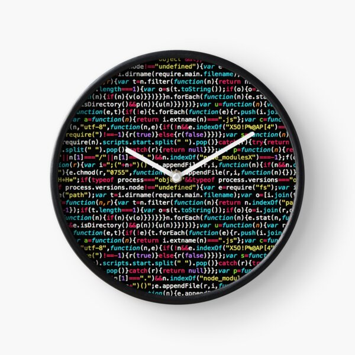

Coyotiv Blog
Writing on AI, software engineering, and career growth
Insights on modern AI engineering practices and career development, written by experts from our corporate trainings and Software School.
Career & AI · July 6, 2026 · 6 min read
Coyotiv's cohorts are increasingly filled with 3-5 year industry veterans, not just beginners. Armağan Amcalar on why the definition of a software engineer has permanently changed in the AI era.
Read the article →

Education & AI · June 11, 2026 · 5 min read
AI can generate code, but what makes a software education actually valuable? Three defining markers of an engineering education that builds resilient professionals, from Coyotiv CEO Armağan Amcalar.
Read the article →

Learning & AI · June 1, 2026 · 5 min read
Information is no longer scarce — it's a flood. Coyotiv CEO Armağan Amcalar on why the future belongs to engineers who learn exactly what they need, exactly when they need it.
Read the article →

Engineering & AI · May 15, 2026 · 9 min read
The software industry is undergoing a seismic shift. Coyotiv CEO Armağan Amcalar on why coding is becoming a commodity, judgment is becoming the scarce skill, and how to actually learn software engineering now.
Read the article →

Technology & Engineering · November 25, 2025 · 8 min read
Why does it feel like there's always a migration looming every time a new framework ships? We look at where framework fatigue comes from, and a scientific method for choosing technology without falling for hype.
Read the article →

Engineering & AI · September 16, 2025 · 5 min read
"Vibe Coding Cleanup Specialist" is now a real job title on LinkedIn. Here's the playbook for shipping fast with AI without ever needing one.
Read the article →
Portfolio & Career · August 23, 2025 · 6 min read
The sea of "my first ChatGPT wrapper" projects is getting deep. Five project ideas that move past hello-world demos and force you to architect real solutions.
Read the article →

Career · November 27, 2024 · 7 min read
You don't need to know exactly where your career is headed to plan it well. Five concrete steps — from defining what you want to writing a personal mission statement — to build your tech career roadmap.
Read the article →

Software School & Career · November 26, 2024 · 5 min read
From imposter syndrome to taking real breaks, from realistic expectations to asking questions — 7 working principles to get through the program as effectively and healthily as possible.
Read the article →

Engineering & Problem-Solving · November 21, 2024 · 10 min read
Software engineering is ultimately all about problem-solving — coding is just a tool. Six concrete techniques, from orientation to the 5 Whys, for becoming a better problem solver.
Read the article →

Career & Engineering · November 20, 2024 · 7 min read
Frontend, backend, databases, salaries, and financing your career change in Germany — a full breakdown of what full-stack software engineers actually do and why they're in demand.
Read the article →

AI & Career · February 11, 2023 · 6 min read
If AI can write code, why do we still need software engineers? We look at what ChatGPT can and can't do, and why software engineering is about far more than generating code.
Read the article →

Learning Science · January 31, 2022 · 9 min read
Does studying late into the night actually work? Does music help you focus, or distract you? Six learning methods best supported by research, from sleep and spaced repetition to active recall.
Read the article →

Career · July 14, 2021 · 6 min read
Do software engineers really sit alone coding in the dark all day? We debunk 6 common myths about math skills, computer science degrees, and who really becomes a software engineer.
Read the article →